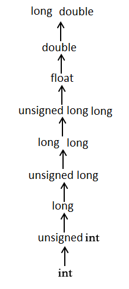

C - Type Casting
Type casting is a way to convert a variable from one data type to another data type. For example, if you want to store a 'long' value into a simple integer then you can type cast 'long' to 'int'. You can convert the values from one type to another explicitly using the cast operator as follows −
(type_name) expression
Consider the following example where the cast operator causes the division of one integer variable by another to be performed as a floating-point operation −
#include<stdio.h>
main(){
int sum =17, count =5;
double mean;
mean=(double) sum / count;
printf("Value of mean : %f\n", mean );
}
When the above code is compiled and executed, it produces the following result −
Value of mean : 3.400000
It should be noted here that the cast operator has precedence over division, so the value of sum is first converted to type double and finally it gets divided by count yielding a double value.
Type conversions can be implicit which is performed by the compiler automatically, or it can be specified explicitly through the use of the cast operator. It is considered good programming practice to use the cast operator whenever type conversions are necessary.
Integer Promotion
Integer promotion is the process by which values of integer type "smaller" than int or unsigned int are converted either to int or unsigned int. Consider an example of adding a character with an integer −
#include<stdio.h>
main(){
int i=17;
char c ='c';/* ascii value is 99 */
int sum;
sum= i + c;
printf("Value of sum : %d\n", sum );
}
When the above code is compiled and executed, it produces the following result −
Value of sum : 116
Here, the value of sum is 116 because the compiler is doing integer promotion and converting the value of 'c' to ASCII before performing the actual addition operation.
Usual Arithmetic Conversion
The usual arithmetic conversions are implicitly performed to cast their values to a common type. The compiler first performs integer promotion; if the operands still have different types, then they are converted to the type that appears highest in the following hierarchy −

The usual arithmetic conversions are not performed for the assignment operators, nor for the logical operators && and ||. Let us take the following example to understand the concept −
#include<stdio.h>
main(){
int i=17;
char c ='c';/* ascii value is 99 */
float sum;
sum= i + c;
printf("Value of sum : %f\n", sum );
}
When the above code is compiled and executed, it produces the following result −
Value of sum : 116.000000
Here, it is simple to understand that first c gets converted to integer, but as the final value is double, usual arithmetic conversion applies and the compiler converts i and c into 'float' and adds them yielding a 'float' result.